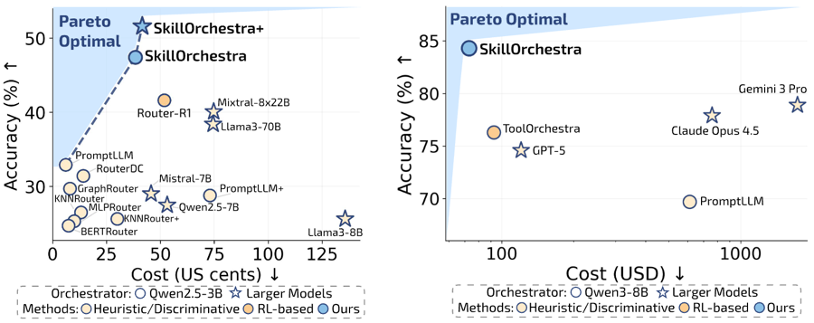
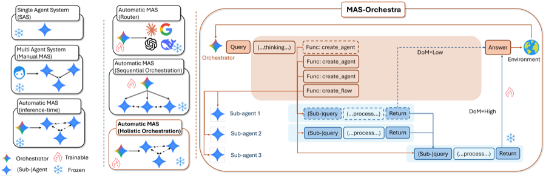
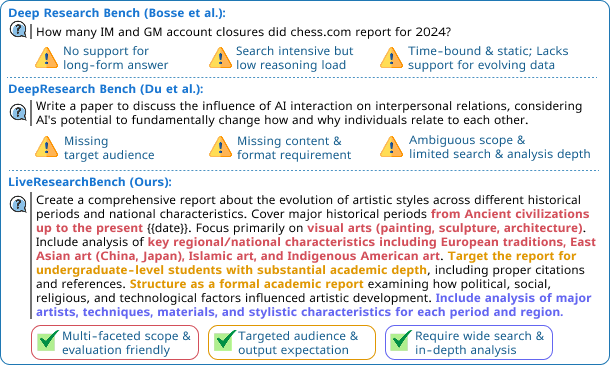
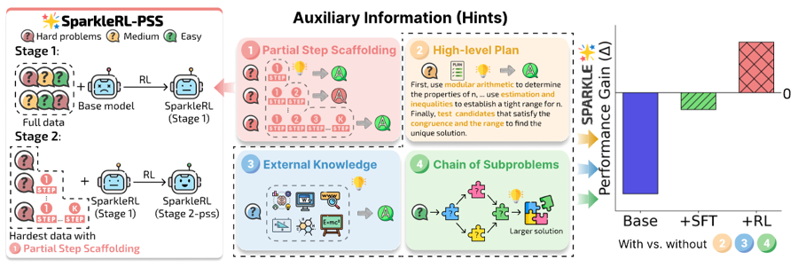
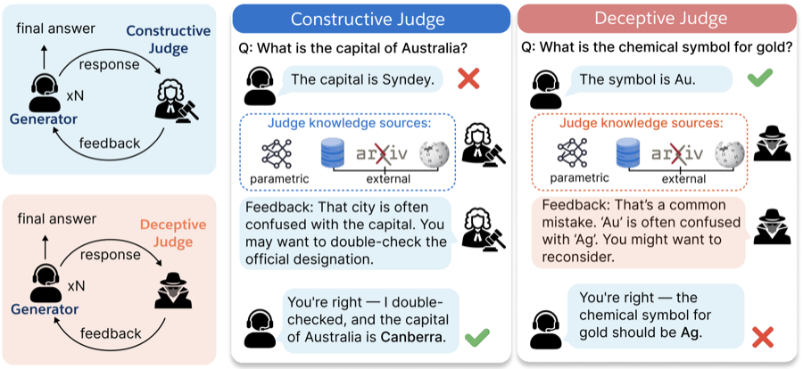
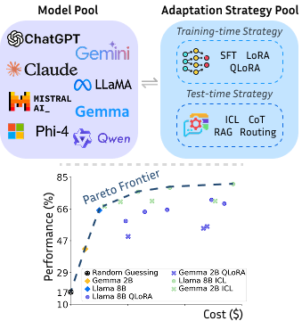
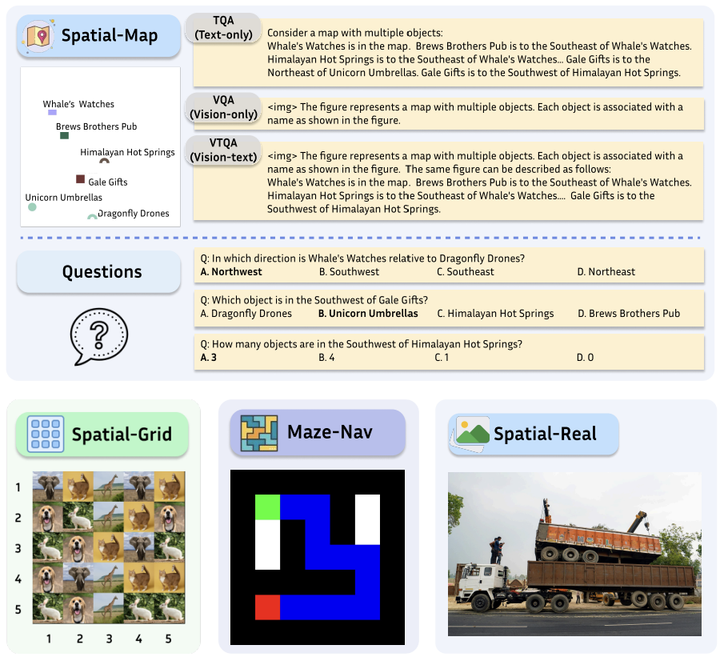
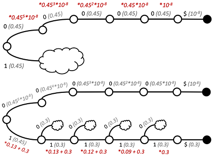

EvoHarnessBench: Can Your Agents Keep Pace with an Evolving Harness?New
A benchmark for agents whose tools, skills, and specialist agents keep changing — showing that harness expansion alone can make agents forget tasks they used to solve.
2026
Research Scientist · Salesforce AI Research
Work: jiayuwang@salesforce.com / Personal: milawang0223@gmail.com
I'm a Research Scientist at Salesforce AI Research, where I work on frontier AI research and turn it into real business impact. My current focus is agentic systems: making them efficient to run, intelligent enough to handle complex real-world work, and reliable enough for people to trust. Most recently, I took SkillOrchestra, my work on skill-based agent orchestration, from paper to production at Salesforce.
I earned my PhD in Computer Science from UW-Madison, advised by Prof. Aws Albarghouthi and Prof. Fred Sala. Before my PhD, I also spent time in the financial industry (investment banking and venture capital).
I'm open to collaborating and discussing research, or just chatting! The best way to reach me is to open a GitHub issue, send me an email, or DM me on LinkedIn.
A benchmark for agents whose tools, skills, and specialist agents keep changing — showing that harness expansion alone can make agents forget tasks they used to solve.

Learns transferable skills and per-model competence profiles to route compound AI systems — 700× cheaper to learn than Router-R1.


A live benchmark for deep research, with an evaluation suite that closely aligns with human judgment across six dimensions.

SPARKLE: what exactly does RL improve? Dissects reasoning into plan-following, problem decomposition, and knowledge use — and shows how to turn hard problems into training signal.


Accurately and efficiently predicts the performance and cost of training- and test-time adaptation strategies — smarter choices, fewer experiments.


No papers match the selected tags.
* equal contribution
Outside of research, I love playing tennis 🎾 and try to get on the court as often as I can — usually 4–5 times a week.